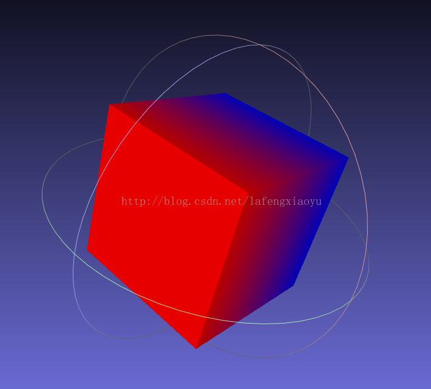

PCD+PLY
PCD格式
文件头格式
现有的文件结构因本身组成的原因不支持由PCL库引进n维点类型机制处理过程中的某些扩展，而PCD文件格式能够很好地补足这一点。PCD不是第一个支持3D点云数据的文件类型，尤其是计算机图形学和计算几何学领域，已经创建了很多格式来描述任意多边形和激光扫描仪获取的点云。包括下面几种格式：
PLY是一种多边形文件格式，由Stanford大学的Turk等人设计开发；
STL是3D Systems公司创建的模型文件格式，主要应用于CAD、CAM领域；
OBJ是从几何学上定义的文件格式，首先由Wavefront Technologies开发；
X3D是符合ISO标准的基于XML的文件格式，表示3D计算机图形数据；
其他许多种格式。
以上所有的文件格式都有缺点，在下一节会讲到。这是很自然的，因为它们是在不同时间为了不同的使用目的所创建的，那时今天的新的传感器技术和算法都还没有发明出来。
每一个PCD文件包含一个文件头，它确定和声明文件中存储的点云数据的某种特性。PCD文件头必须用ASCII码来编码。PCD文件中指定的每一个文件头字段以及ascii点数据都用一个新行（\n）分开了，从0.7版本开始，PCD文件头包含下面的字段：
VERSION –指定PCD文件版本
FIELDS –指定一个点可以有的每一个维度和字段的名字。例如：
1
2
3
4
5
6
7
8
9FIELDS x y z # XYZ data
FIELDS x y z rgb # XYZ + colors
FIELDS x y z normal_xnormal_y normal_z # XYZ + surface normals
FIELDS j1 j2 j3 # moment invariants
...SIZE –用字节数指定每一个维度的大小。例如：
1
2
3
4
5
6
7unsigned char/char has 1 byte
unsigned short/short has 2 bytes
unsignedint/int/float has 4 bytes
double has 8 bytesTYPE –用一个字符指定每一个维度的类型。现在被接受的类型有
1
2
3
4
5I – 表示有符号类型int8（char）、int16（short）和int32（int）；
U – 表示无符号类型uint8（unsigned char）、uint16（unsigned short）和uint32（unsigned int）；
F – 表示浮点类型。COUNT –指定每一个维度包含的元素数目。例如，x这个数据通常有一个元素，但是像VFH这样的特征描述子就有308个。实际上这是在给每一点引入n维直方图描述符的方法，把它们当做单个的连续存储块。默认情况下，如果没有COUNT，所有维度的数目被设置成1。
WIDTH –用点的数量表示点云数据集的宽度。根据是有序点云还是无序点云，WIDTH有两层解释：
- 它能确定无序数据集的点云中点的个数（和下面的POINTS一样）
- 它能确定有序点云数据集的宽度（一行中点的数目）
注意：有序点云数据集，意味着点云是类似于图像（或者矩阵）的结构，数据分为行和列。这种点云的实例包括立体摄像机和时间飞行摄像机生成的数据。有序数据集的优势在于，预先了解相邻点（和像素点类似）的关系，邻域操作更加高效，这样就加速了计算并降低了PCL中某些算法的成本。
例如：
WIDTH 640 # 每行有640个点
HEIGHT –用点的数目表示点云数据集的高度。类似于WIDTH ，HEIGHT也有两层解释：
- 它表示有序点云数据集的高度（行的总数）
- 对于无序数据集它被设置成1（被用来检查一个数据集是有序还是无序）
有序点云例子：
WIDTH 640 # 像图像一样的有序结构，有640行和480列，
HEIGHT 480 # 这样该数据集中共有640*480=307200个点
无序点云例子：
WIDTH 307200
HEIGHT 1 # 有307200个点的无序点云数据集
VIEWPOINT–指定数据集中点云的获取视点。VIEWPOINT有可能在不同坐标系之间转换的时候应用，在辅助获取其他特征时也比较有用，例如曲面法线，在判断方向一致性时，需要知道视点的方位，视点信息被指定为平移（txtytz）+四元数（qwqxqyqz）。
默认值是：VIEWPOINT 0 0 0 1 0 0 0
POINTS–指定点云中点的总数。从0.7版本开始，该字段就有点多余了，因此有可能在将来的版本中将它移除
例子：
POINTS 307200 #点云中点的总数为307200
DATA –指定存储点云数据的数据类型。从0.7版本开始，支持两种数据类型：ascii和二进制。
注意：文件头最后一行（DATA）的下一个字节就被看成是点云的数据部分了，它会被解释为点云数据。
警告：PCD文件的文件头部分必须以上面的顺序精确指定，也就是如下顺序：
VERSION、FIELDS、SIZE、TYPE、COUNT、WIDTH、HEIGHT、VIEWPOINT、POINTS、DATA
之间用换行隔开。
数据存储类型
在0.7版本中，.PCD文件格式用两种模式存储数据：
如果以ASCII形式，每一点占据一个新行：
1 | p_1 |
注意：从PCL 1.0.1版本开始，用字符串“nan”表示NaN，此字符表示该点的值不存在或非法等。
如果以二进制形式，这里数据是数组（向量）pcl::PointCloud.points的一份完整拷贝，在Linux系统上，我们用mmap/munmap操作来尽可能快的读写数据，存储点云数据可以用简单的ascii形式，每点占据一行，用空格键或Tab键分开，没有其他任何字符。也可以用二进制存储格式，它既简单又快速，当然这依赖于用户应用。ascii格式允许用户打开点云文件，使用例如gunplot这样的标准软件工具更改点云文件数据，或者用sed、awk等工具来对它们进行操作。
相对其他文件格式的优势
用PCD作为（另一种）文件格式可能被看成是没有必要的一项工作。但实际中，情况不是这样的，因为上面提到的文件格式无一能提高PCD文件的适用性和速度。PCD文件格式包括以下几个明显的优势：
- 存储和处理有序点云数据集的能力——这一点对于实时应用，例如增强现实、机器人学等领域十分重要；
- 二进制mmap/munmap数据类型是把数据下载和存储到磁盘上最快的方法；
- 存储不同的数据类型（支持所有的基本类型：char，short，int，float，double）——使得点云数据在存储和处理过程中适应性强并且高效，其中无效的点的通常存储为NAN类型；
- 特征描述子的n维直方图——对于3D识别和计算机视觉应用十分重要。
另一个优势是通过控制文件格式，我们能够使其最大程度上适应PCL，这样能获得PCL应用程序的最好性能，而不用把一种不同的文件格式改变成PCL的内部格式，这样的话通过转换函数会引起额外的延时。
注意：尽管PCD（点云数据）是PCL中的内部文件格式，pcl_io库也提供在前面提到的所有其他文件格式中保存和加载数据。
例子
下面贴出了PCD文件的一个片段。把它留给读者以解析这些数据，看看它的组成，玩的愉快！
1 | # .PCD v.7 - Point Cloud Data file format |
PLY——多边形文件格式
也被称为斯坦福三角格式
- 足够简单
- 典型的PLY对象定义仅仅是顶点的（x，y，z）三元组列表和由顶点列表中的索引描述的面的列表
文件结构
这是一个典型的PLY文件的结构：
1 | Header |
标题是一系列回车终止的文本行，描述文件的其余部分。
标题包括每个元素类型的描述，包括元素的名称（例如“边”），对象中有多少这样的元素以及与该元素相关联的各种属性的列表。
在标题之后是每个元素类型的元素列表，按照标题中描述的顺序呈现
1 | ply |
此示例演示了标题的基本组件。 标题的每个部分都是以关键字开头的回车终止的ASCII字符串。 即使标头（“ply”和“end_header”）的开头和结尾都是这种形式。 字符“ply”必须是文件的前四个字符，因为它们作为文件的魔术数字。
1 | element |
在“元素”行之后列出的属性定义属性的数据类型以及属性为每个元素显示的顺序。 属性可能有两种类型的数据类型：标量和列表。 以下是属性可能具有的标量数据类型的列表：
1 | name type number of bytes |
这些字节计数是重要的，并且不能在实现之间变化，以便这些文件可移植。 有一种使用列表数据类型的特殊形式的属性定义：
property list
一个例子是上面的立方体文件：
property list uchar int vertex_index
这意味着属性“vertex_index”首先包含一个无符号字符，表示该属性包含多少个索引，后跟一个包含多个整数的列表。 此变长列表中的每个整数都是顶点的索引。
另一个例子
这是另一个立方体定义：
1 | ply |
该文件为每个顶点指定一个红色，绿色和蓝色的值。 为了说明vertex_index的可变长度属性，对象的前两个面是三角形，而不是单个正方形。 这意味着对象中的面数是7.这个对象还包含一个边列表。 每个边包含两个指向边缘的顶点的指针。 每个边缘也有一个颜色。 指定了上面定义的五个边，以突出显示文件中的两个三角形。 前四个边是白色的，它们围绕着两个三角形。 最后的边缘是黑色的，它是分隔三角形的边。

用户定义的元素
上面的例子显示了使用三个元素：顶点，面和边。 PLY格式允许用户自己定义元素。 用于定义新元素的格式与顶点，面和边缘完全相同。 以下是定义材质属性的标题部分：
1 | element material 6 |
这些线将直接在顶点，面和边的规范之后出现在标题中。 如果我们希望每个顶点都有一个材质规范，我们可以将这一行添加到顶点属性的末尾：
1 | property material_index int |
该整数现在是包含在文件中的材料列表的索引。一个新的应用程序的作者可能会发现几个要存储在PLY文件中的新元素。这种做法应该保持在最低限度。更好的是尝试将常用元素（顶点，面，边缘，材质）修改为新的用途，以便了解这些元素的其他程序可能有助于处理这些适应的元素。例如，将分子描述为球体和圆柱体的集合的应用程序。对于包含分子的PLY文件，将是诱人的定义球体和圆柱体元素。但是，如果我们为此使用顶点和边缘元素（将radius属性添加到每个元素），我们可以使用操纵和显示顶点和边的程序。显然，不应该为三角形和四边形创建特殊元素，而是使用面元素。如果程序不知道面和顶点之间的邻接（所谓的非共享顶点）怎么办？这就是每个三角形（说）纯粹是空间中三个位置的集合，没有概念是否有一些三角形有共同的顶点。这是一个相当普遍的情况。假设给定对象中有N个三角形，则应将3N顶点写入文件，然后再将N个面简单地连接到这些顶点。我们预计将编写一个在非共享和共享顶点文件之间进行转换的实用程序。